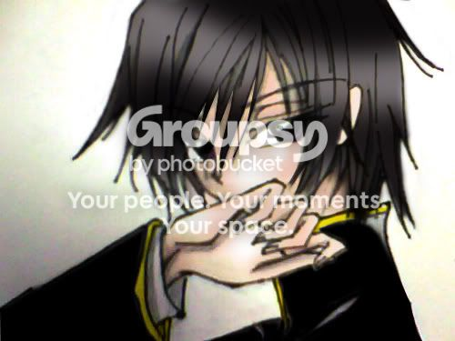

ขออภัยที่ต่อช้า พอดีถึงฤดูที่ยูริรินต้องจำศีล เอ๊ย!!!
ไม่ใช่ๆ งานท่วมหัว + ป่วย + โดนฉุดกระชากลากถูไปเที่ยว
Legendary Of Vampire
ราตรีที่8 ความลับของหลันฮัว
กาลเวลาล่วงเลยผ่านมาหลายชั่วโมง ขณะนี้เวลา เที่ยงคืนเป๊ะ ไม่ขาดไม่เกิน ปกติแล้วพวกที่ถูกทำโทษก็อาจจะหลับกันหมด หากแต่ว่า... คืนนี้.....ทั้งหมดกลับรวมใจกันไปที่ห้องของชายหนุ่มซึ่งเป็น น.รคลาสแวมไพร์ และหญิงสาว คลาสแวมไพร์เช่นกัน พวกเค้ามาทำอะไรกัน...
ณ ใต้ผ้าห่มผืนใหญ่พอที่จะจุคนได้14กว่าคน (โคตรผ้าห่ม)
ในมือของหญิงสาวรูปร่างเพรียวบาง กับ ชายหนุ่มน.รดีเด่นคลาสมนุษย์ มีไฟฉายขนาดเหมาะมือ อยู่คนละอัน แสงของไฟฉายถูกส่องขึ้นไปข้างบน เพื่อที่จะให้แสงสว่างภายในผ้าห่มนั้น (ทำไรกันฟะนี่ - -“)
ส่วนอีก12คน หรือ1โหลที่เหลือนั้น ก็นั่งนิ่งๆกันอยู่ใต้ผ้าห่มผืนนั้นเช่นกัน อย่างหวาดระแวง
“นี่ พวกนาย” เสียงเรียบๆ ดังมาจากทางผู้ที่ถูกฉุดกระชากเข้ามาในผ้าห่มนี่เมื่อ10นาทีก่อน และ เขาก็เป็นเจ้าของห้องด้วย
“จ๋า?” ทุกคนพร้อมใจกันหันมายิ้มแหยๆ ให้กับชายหนุ่มที่ แผ่รังสีมาคุออกมา
“ทำไมต้องมาประชุมบ้าๆบอๆนี่ที่ห้องฉัน?” ใบหน้าของผู้ถามเรียบเฉย ดวงตาสีฟ้า จ้องเขม็ง ประมาณว่า ถ้าเหตุผลไม่ดีพอพวกแกศพไม่สวยแน่
“กะ..กะ ก็แหม ลีจัง ก็เพราะห้องนี้มันไม่มีผีนี่ ขอหลบมาทำใจคืนนึงนะ T T”หญิงสาวคนต้นคิด หรืออีกอย่างก็คือ ผู้ถือไฟฉาย ทำหน้าตาน่าสงสาร ขอความเห็นใจสุดชีวิต ประมาณว่าถ้าไม่ให้หลบ จะขาดใจตายให้ดู
ใบหน้าของคุณเจ้าของห้อง ก็ยังคง....เฉย เหมือนเดิม ก่อนที่จะหันไป นั่งเงียบๆอยู่ในโลกส่วนตัวของตนต่อไป เหมือนกับไม่เห็น ไม่ได้ยินอะไรอีก และอาจจะทำตัวเหมือนเป็นใบ้ ด้วยซ้ำ
“งั้นขอเริ่มจากฉันนะพิธีกรรายการครั้งนี้ โอริฮิเมะ ค่า วิญญาณในห้องของฉันน่ะ ยังเป็นปริศนาค่ะ ได้ยินเพียงแค่เสียงเดินเท่านั้น”พิธีกรสาวกล่าว ทุกคนมองด้วยสายตาประมาณว่า เธอเป็นพิธีกรอะไรนั่นตั้งแต่เมื่อไหร่
“เอาล่ะๆ ต่อไป เริ่มจากคุณ ฟุจิระ เอมิยะ วิญญาณในห้องคุณเป็นยังไงบ้าง” ผู้ที่ทำตัวคล้ายพิธีกรรายการช็อค สคูลเลิกทำหน้าตาน่าสงสารแล้วหันมา ใช้ไฟฉายจ่อที่ปากของแขกรับเชิญคนที่1 เพื่อแทนไมค์ แต่ แขกรับเชิญคนที่ว่านั้นกลับ ปัดไฟฉายออก เพราะ ไฟมันแยงตา - -
“เอ่อ...มันน่ากลัวมากๆๆๆๆๆเลยล่ะ”แขกรับเชิญคนที่1 สาวสวยนักเรียนคลาสแวมไพร์ เจ้าของผมสีบรอนซ์ทองอ่อนๆ กล่าวเบาๆ ใบหน้าของเธอนั้นแสดงถึงความหวาดกลัว
“โอ้ว มันต้องเป็นวิญญาณสาวที่มีใบหน้าเละๆใช่มั้ย”ผู้ที่ทำตัวคล้ายพิธีกร แสดงแอคติ้งเวอร์จนบางคนรับไม่ได้
“เปล่าค่ะ”ดวงตาสีน้ำตาลช็อกโกแลตนั้นหลุบลงเล็กน้อย ริมฝีปากบางเม้มเข้าหากัน น้ำเสียงสั่นเครือถูกเปล่งออกมา แสดงให้รู้ว่า เธอใกล้จะร้องไห้แล้ว
“แล้วมันทำไมเหรอคะ?”แม่พิธีกรตื่นเต้นเข้าไปใหญ่ หรือว่า มันจะสยองกว่านั้น!!!
“มัน...มันคือ...วิญญาณเด็กผู้ชายค่ะน่ากลัวมากๆ!!!”สิ้นเสียง คุณแขกรับเชิญคนที่1 ทุกคนในที่นั้น ที่นั่งลุ้นจนเหงื่อตก ต่างอึ้ง แข็ง ค้าง ไปตามๆกัน
“- - เอิ่มมม... โอเคค่ะ ต่อไป คุณนามิเฟีย แล้วที่ห้องคุณล่ะคะ?”ใบหน้าหวานพร้อมร่างเพรียวบาง พุ่งเข้าไปหาคุณแขกรับเชิญคนที่2ในทันที จนอีกฝ่ายตกใจ จึงยกเท้าขึ้นมากันไว้อัตโนมัติ = เท้า ห่างกับหน้าคุณพิธีกร6มิล พอดี (วัดทามมายยย)
“เหวออออ อ่ะ ค่ะ คือ...ห้องของฉัน ก็มีแค่วิญญาณแมวสีขาวๆเองค่ะ”แขกรับเชิญคนที่2 เขยิบออกห่างคุณพิธีกร ก่อนจะตอบ นิ้วเรียวปัดปอยผมสีเพลิงที่มาปรกหน้าของตน
“- - ค่ะ กรุณาวางเท้าลงด้วยค่ะ ต่อไป คุณโรเว่น เป็นไงบ้างเหรอคะ”แสงของไฟฉายถูกส่องไปทางชายหนุ่มที่นั่งถือไฟฉายอีกกระบอกฟังเงียบๆ หรือคุณแขกรับเชิญคนที่3
“อ่อ ห้องของผมเหรอ ก็ไม่มีอะไรมากนะครับ แค่วิญญาณผู้หญิงเลือดโชกเท่านั้นแหละครับ แต่ไม่มีปัญหาอะไร”แขกรับเชิญคนที่3กล่าวด้วยใบหน้ายิ้มละไม ผิดกับบุคคลที่นั่งข้างๆ
“เพราะอะไรเหรอคะ?”พิธีกรสาวกล่าวถาม เพื่อไขข้อสงสัยของทุกคนที่นั่งส่งสายตาอยากรู้เต็มที่
“จะอะไรซะอีกล่ะ ก็ยัยนั่นน่ะ ติดฉันเป็นตังเม แถมยังมาเรียก ที่รักๆ แล้วบอกว่าตกหลุมรักตั้งแต่แรกพบอ่ะดิ เวลาฉันนอนหล่อนก็จะมานอนข้างๆสยองเป็นบ้า”ชายหนุ่มผมสีเงินอีกคน ผู้เป็นบั๊ดดี้ของคุณแขกรับเชิญคนที่3 กล่าวอย่างหมดอาลัยตายอยาก
“สเน่ห์แรงนะนาย สมแล้วที่เป็นประธานน.รคลาสแวมไพร์ หึหึ” กล่าวอย่างหาเรื่อง กลั้นหัวเราะเล็กน้อย แอบสมน้ำหน้า ผู้ที่เป็นศัตรู แต่ตอนนี้จำเป็นต้องพักรบชั่วคราว
“หุบปากไปเลยเจ้าติงต๊องเคนอิจิ”ผู้ที่ถูก หัวเราะ กล่าวอย่างเคืองๆ ก่อนจะนั่งฟึดฟัดๆอยู่คนเดียว
“โอเคๆ พอค่ะพอ ต่อไปนะคะ คุณซีโร่ ว่าไงคะ”พิธีกรสาว จ้องหน้าของผู้ที่เป็นแขกรับเชิญคนที่4
“หนวกหูสิ้นดี ไอ้วิญญาณปัญญาอ่อนนั่นเอาแต่สีไวโอลินเพี้ยนๆ แถมยังส่งเสียงร้องห่วยๆออกมาคลออีก นรกชัดๆ”แขกรับเชิญคนที่4 ทำหน้ารำคาญ
“เหอๆ ถ้านึกไม่ออกลองคิดถึงเสียง ในโรงเลื่อยไม้ ผสมกับเสียง หมากัดกัน ไม่ก็แมวโดนเหยียบหางอ่ะ เหมือนเลยล่ะ”น.รใหม่แห่งคลาสแวมไพร์ที่หายไปหลายตอน กล่าวขึ้นมา ทำหน้าเซ็งโลกอีกคน
“โห...จะนอนหลับมั้ยนั่น”ชายหนุ่มหน้าตาหล่อเหลา บั๊ดดี้ของเอมิยะ นึกสภาพสักครู่ก่อนจะกล่าว หน้าแหยงๆ
“แหะๆ งั้นต่อไป คุณหลันฮัว ว่ามาเลยค่ะ น่ากลัวมากใช่มั้ย ได้ยินเสียงกรี๊ดดังมากๆเลยค่ะ”คราวนี้ดูท่าทางเธอจะตื่นเต้นยิ่งกว่าทุกครั้ง เนื่องจากเสียงกรี๊ดเมื่อเย็นดังมาจากห้องของคุณแขกรับเชิญคนที่5
“ก็ไม่นี่”ผู้ถูกถามกลับตีหน้านิ่ง ทุกคนในที่นั้นงงไปตามๆกัน
“อ้าว แล้วทำไม เสียงกรี๊ดนั่น?”ชายผู้ที่มีใบหน้าที่สาวๆเห็นเป็นต้องหลง อีกราย หรือบั๊ดดี้ของคุณพิธีกร กล่าวถามเพราะสงสัยมานานมากกกกก
“อ่อ เพราะยัยนั่นน่ะ ยกมีดขึ้นมาแล้วพุ่งจะเข้ามาจะฆ่าฉันน่ะสิ”ยังคงตีหน้านิ่งเช่นเดิม ในขณะที่ทุกคน ทำหน้าเหวอ
“แล้ว นายทำไงอ่ะ”หญิงสาวผู้ที่เป็นเจ้าของห้องอีกคน เขยิบเข้าไปใกล้ๆอีก ด้วยความอยากรู้
“ก็ ใช้ไอ้นี่”พูดจบก็เปิดกระเป๋าที่พกไปไหนมาไหนด้วยเสมอ ก่อนจะควานหาอะไรบางอย่าง พร้อมด้วยสายตา12คู่ที่มองตามด้วยความสนใจ
“นี่ไง อ่ะ เอาไปดู ใช้ได้ดีนะ”สิ่งที่ปรากฏแก่สายตาทุกคนคือ ขวด ซึ่งข้างในมีน้ำใสๆอยู่เกือบเต็ม และ สิ่งที่เป็นคล้ายๆกับด้ายม้วนใหญ่
“นี่..อะไรอ่ะ น้ำ กับด้าย?”บั๊ดดี้ของแขกรับเชิญคนที่5 กล่าว งงๆ มันปราบผีได้เรอะ?
“ไม่ใช่ เอาไปดูให้ดีๆ”ส่งขวดน้ำกับด้ายนั้นให้บั๊ดดี้ของตน ซึ่งหันทางด้านที่มีฉลากแปะอยู่
น้ำมนต์ศักดิ์สิทธิ หลวงพ่อ______(เซ็นเซอร์)
ปลุกเสก9วัด เฉพาะในคืนพระจันทร์เต็มดวง
=[]=!!!! <<<< หน้าของทุกคน
“ส่วนอีกอย่างนั่นน่ะ สายสิญจน์ ของ2อย่างเนี่ย อิมพอร์ตจากเมืองไทยเชียวนะ”แขกรับเชิญคนที่5กล่าวเรียบๆ ก่อนจะรูดซิบกระเป๋าของตน
ปล่อยให้ทุกคนที่นั่น อึ้งงงงงงงง
เพื่อนกุเล่นของงงงงงง
TBC
เอาล่ะนอกเรื่องนิสนึงงงงงงง
มีใครรู้จักเรื่อง Code GEASS กันมั่งมิ พอดีรับงานมานิสนุง
หลังจากศึกษาจนเกือบบรรลุก็กรี๊ดพระเอกมากมาย ลูลูชชชชชช จากนั้นจึงเริ่มละเลงงาน
นั่นก็คือ วาดรูปลูลูช แต่ คนสั่งให้วาดตามแบบอ่ะ มีรูปต้นแบบมาให้ มันเผา+เห่ยมากมายT T
ยังไงก็ติชมเน้ออออออ
ถ่ายกะกล้องมือถือแล้วปรับในโฟโต้ชอปงิ

แบบลงสี(เน่าๆ)

ป.ล ใครเป็นสาวกลูลูช อย่าบอมบ้านนู๋นะ T T


 โดยรวมสวยดีครับ
โดยรวมสวยดีครับ